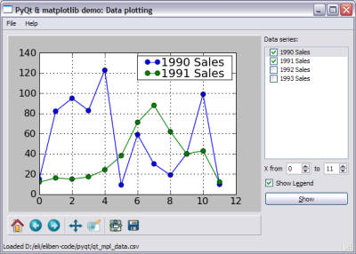

I've posted a new demo featuring plotting of data from a .CSV file in PyQt.
The demo shows how to read the .CSV file and populate a list of checkable "data
series" (using QListView) from it. Then, when series are selected,
they can be plotted.
Now, this time there are two snippets. One shows how to plot with
matplotlib:

The other shows how to plot with PyQwt:
These two libraries are a bit different, and each has its merits. I might write more on the subject in a future post.